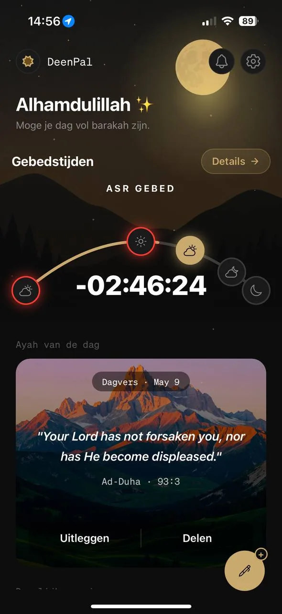
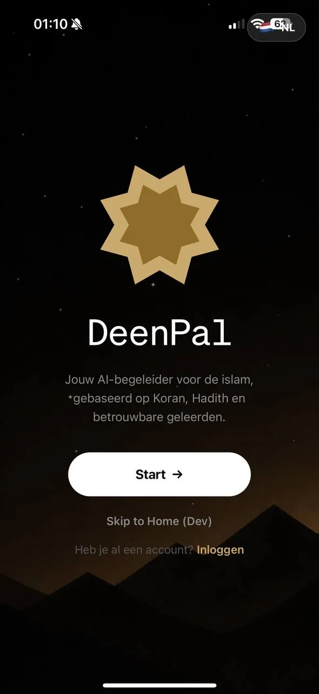
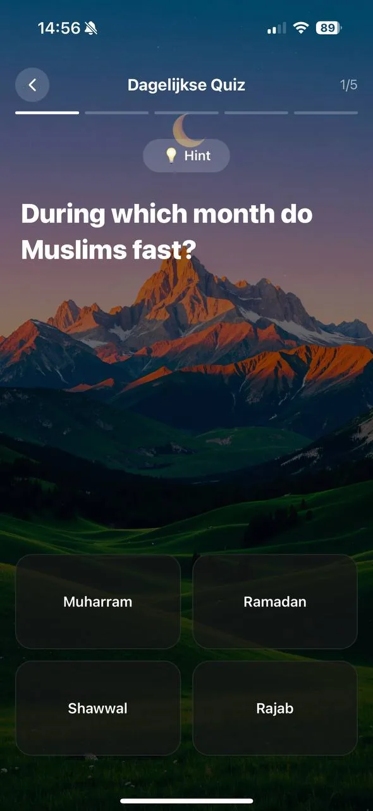
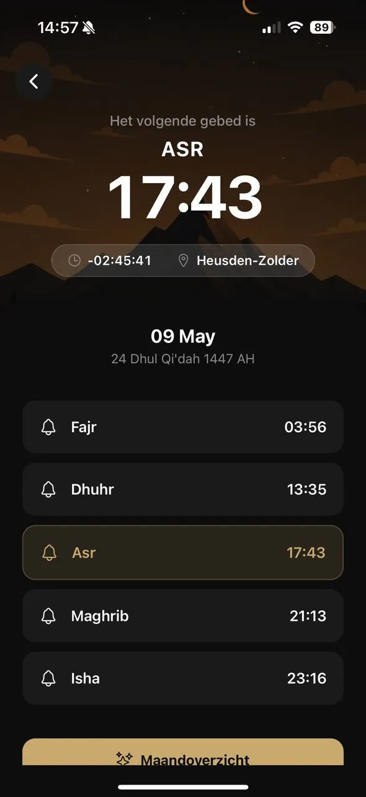

Gebedstijden
Prachtige boogvisualisatie toont alle 5 dagelijkse gebeden, een live aftelling naar het volgende gebed en eenvoudig gebed bijhouden. Jouw GPS zorgt voor precieze nauwkeurigheid overal ter wereld.
DeenPal is jouw alles-in-één islamitische companion, nauwkeurige gebedstijden, dagelijkse Koranverzen, AI islamitische Q&A, dagelijkse quiz en gecureerd nieuws.

Zes krachtige functies, prachtig ontworpen, alles in één app.
Prachtige boogvisualisatie toont alle 5 dagelijkse gebeden, een live aftelling naar het volgende gebed en eenvoudig gebed bijhouden. Jouw GPS zorgt voor precieze nauwkeurigheid overal ter wereld.
Stel elke islamitische vraag en ontvang antwoorden met echte bronnen. Kies Rafiq voor dagelijkse begeleiding of Hakim voor diepgaande geleerde fiqh-analyse over alle madhabs.
Elke dag een vers vers uit de Koran. Tik voor een AI-uitleg of deel het prachtig met vrienden.
Test je kennis met dagelijkse quizvragen. Bouw streaks op, volg je wekelijkse voortgang en groei consistent.
Gecureerd nieuws van betrouwbare islamitische en wereldbronnen, Muslim Matters, Al Jazeera, TRT World, Yaqeen Institute en meer.
Jouw gesprekken, gebedslogs en persoonlijke gegevens blijven privé. We verkopen nooit jouw gegevens.
DeenPal biedt twee verschillende AI-persoonlijkheden, elk ontworpen voor een andere vorm van islamitische begeleiding.
Jouw islamitische vriend voor alledag. Rafiq beantwoordt dagelijkse vragen op een warme, toegankelijke manier, over salah, vasten, liefdadigheid of het leven als moslim in de moderne wereld.
Jouw geleerde AI. Hakim geeft diepgaande fiqh-analyse en vergelijkt uitspraken van alle vier grote madhabs, Hanafi, Maliki, Shafi'i en Hanbali, met citaten uit de klassieke wetenschap.
Factgecontroleerde antwoorden, DeenPal kruist antwoorden met betrouwbare islamitische bronnen en geeft duidelijk aan wanneer er onzekerheid bestaat.
Elk scherm met zorg gemaakt, licht en donker thema, vloeiende animaties, premium gevoel.



DeenPals boog-gebaseerde gebedstracker geeft je een prachtig overzicht van al je dagelijkse gebeden. Zie wat voorbij is, wat hierna komt en log voltooide gebeden met een prettig lang indrukken.
★★★★★"Eindelijk een islamitische app die echt premium aanvoelt. De gebedsvisualisatie is prachtig en de AI weet echt waar hij over praat."
★★★★★"Hakim-modus is ongelooflijk, ik stelde een fiqh-vraag en kreeg alle vier madhab-standpunten duidelijk gepresenteerd. Dit is baanbrekend voor het leren."
★★★★★"De dagelijkse quiz houdt me consistent aan het leren. Ik heb een streak van 30 dagen en voel me meer kennis over mijn deen dan ooit."
★★★★★"Ik hou van het Vers van de Dag. Elke ochtend open ik het en krijg een vers dat precies spreekt tot wat ik meemaak. SubhanAllah."
Praktische islamitische gidsen, app-tips en reflecties over het leven als moslim vandaag.
Wudu is de poort naar het gebed. Leer alle 9 stappen met Arabische dua's, transliteraties en uitleg over veelgemaakte fouten...
Wanneer bidden, hoeveel rak'ah, de beste dua's en praktische tips om consistent wakker te worden voor het meest geliefde vrijwillige gebed...
Kunstmatige intelligentie verandert hoe moslims hun deen leren. We verkennen de kansen, uitdagingen en hoe AI verantwoord te gebruiken...
DeenPal is een AI islamitische companion app voor iPhone. De app combineert gebedstijden, dagelijkse Koranverzen, een AI-chatbot voor islamitische vragen (Rafiq en Hakim modi), dagelijkse islamitische quiz en een gecureerde nieuwsfeed, alles in één prachtig ontworpen app.
Ja! DeenPal is gratis te downloaden en bevat gebedstijden, het dagelijkse vers, dagelijkse quiz, nieuws en beperkte AI-chat. Premium geeft onbeperkte AI, de Hakim geleerde modus, cross-madhab fiqh-vergelijking en een dagelijks groeiplan.
Rafiq (رفيق) betekent "companion", vriendelijke modus voor dagelijkse islamitische vragen. Hakim (حكيم) betekent "de wijze", geleerde modus voor diepgaande fiqh-analyse die uitspraken vergelijkt van alle vier grote madhabs (Hanafi, Maliki, Shafi'i, Hanbali).
DeenPal berekent gebedstijden op basis van je GPS-locatie voor precieze nauwkeurigheid. Berekeningen gebruiken bewezen astronomische formules en ondersteunen meerdere rekenmethoden. De app werkt voor elke stad ter wereld.
Ja, DeenPal werkt voor moslims overal ter wereld. Gebedstijden worden berekend voor jouw exacte GPS-locatie, of je nu in Amsterdam, Dubai, New York of Jakarta bent.
Privacy is een kernwaarde bij DeenPal. We verkopen nooit jouw persoonlijke gegevens. Jouw AI-gesprekken en gebedslogs worden veilig opgeslagen en nooit gedeeld met derden.
Absoluut, dat is precies waarvoor Hakim-modus is gebouwd. Stel Hakim een fiqh-vraag en het presenteert de standpunten van de Hanafi, Maliki, Shafi'i en Hanbali scholen duidelijk.
Ja, DeenPal is beschikbaar op iPhone en iPad. Download het gratis via de App Store.
Download DeenPal gratis en sluit je aan bij duizenden moslims die elke dag hun geloof verdiepen. Beschikbaar op iPhone en iPad.
Gratis downloaden · Geen creditcard nodig · Beschikbaar wereldwijd